Current branch: decouple-swarmforge. These are screenshots of the built extension.
Implementation and test report ? Original mockups ? Research and recommendations
Local fixture data. Tealium setup is shown; live website observation remains a stated test limit.
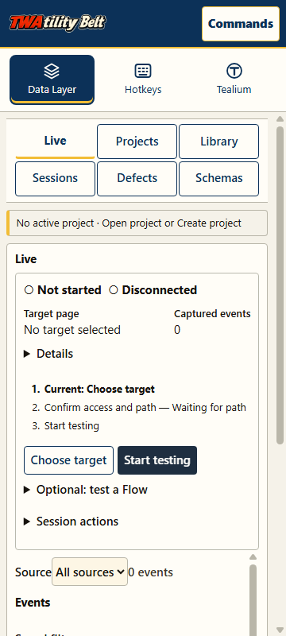
Open full screenshot
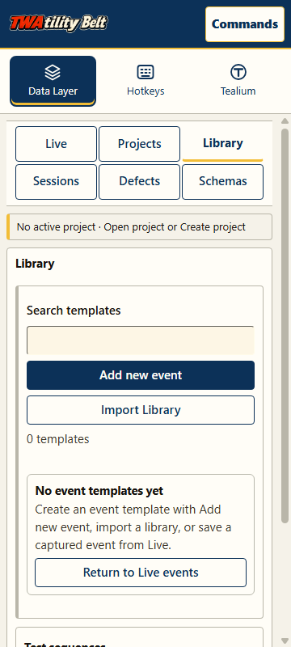
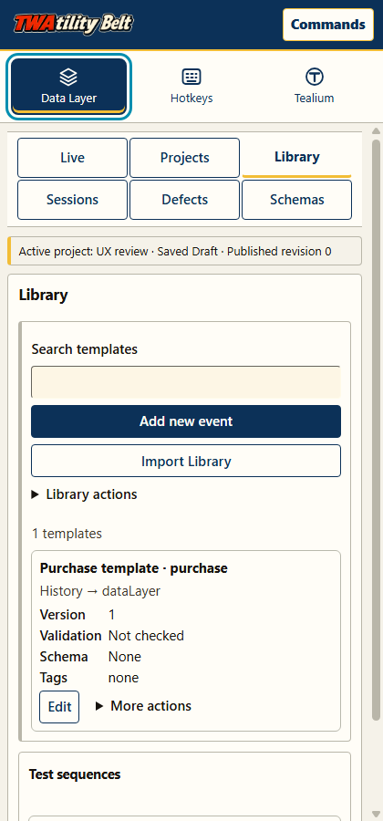
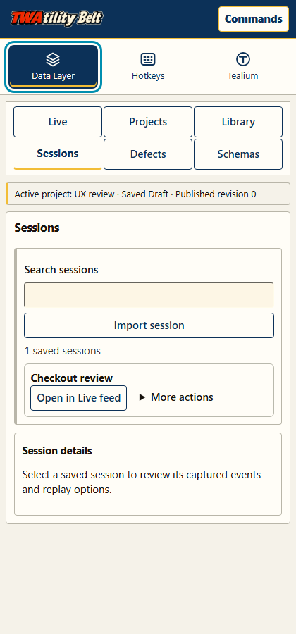
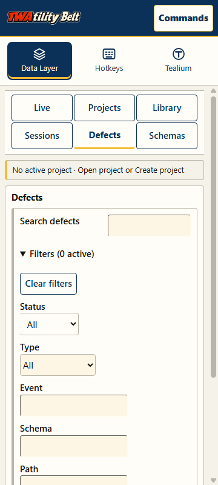
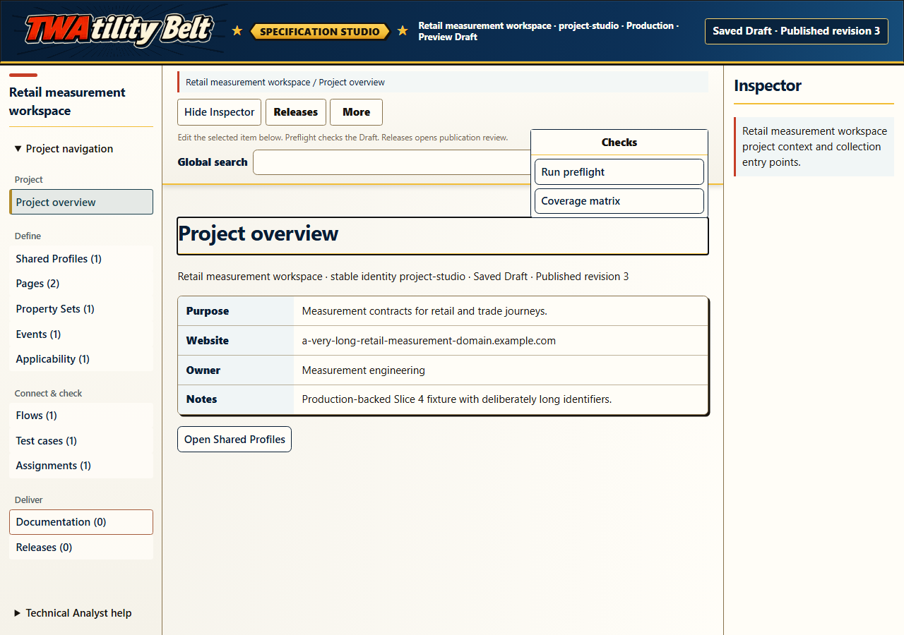
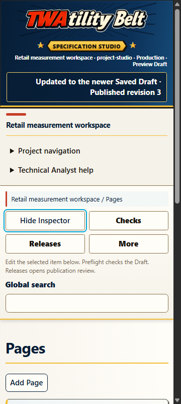
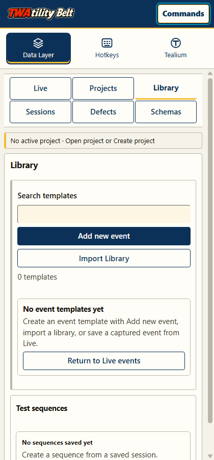
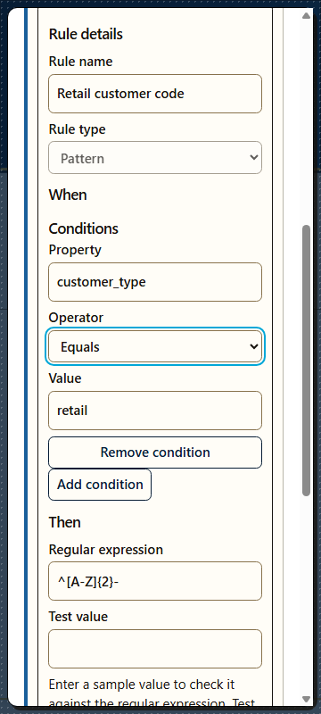
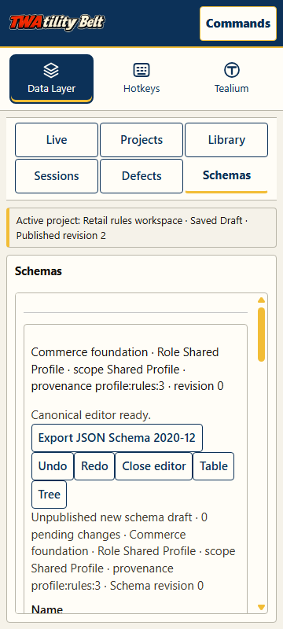
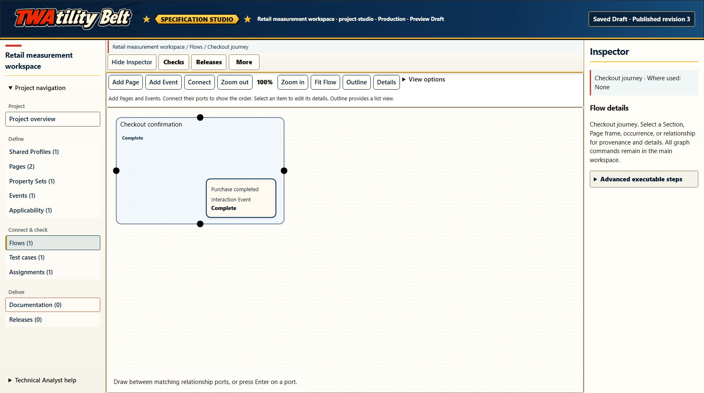
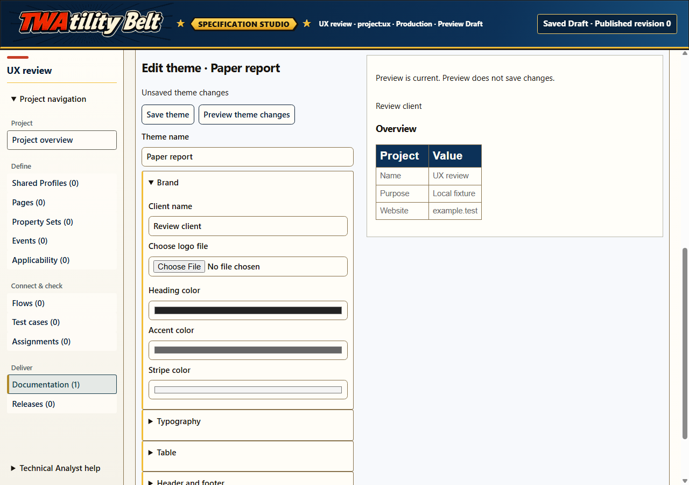
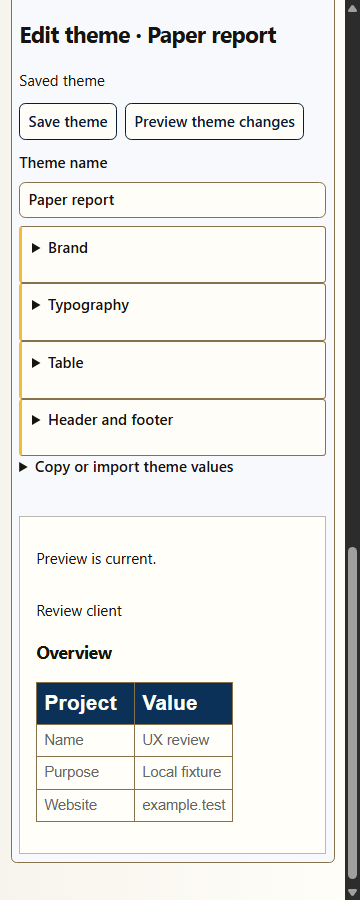
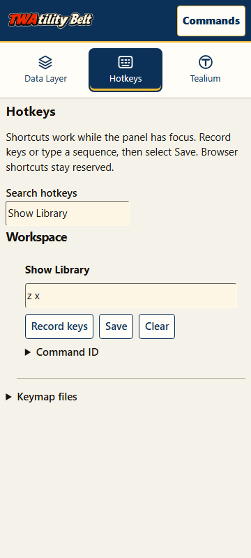
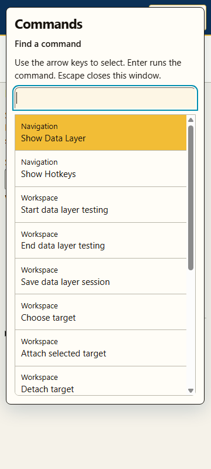
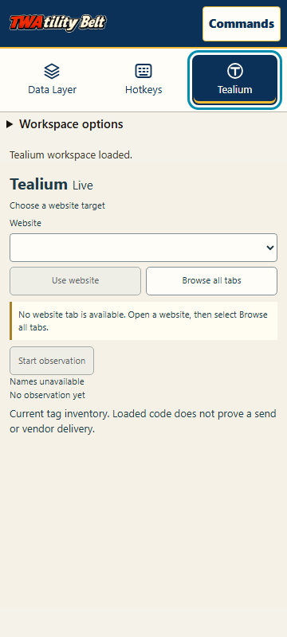